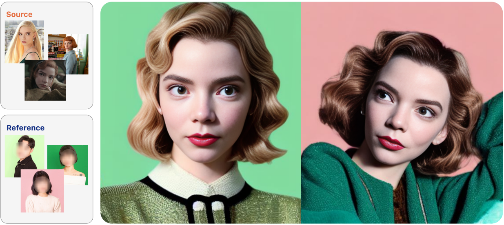
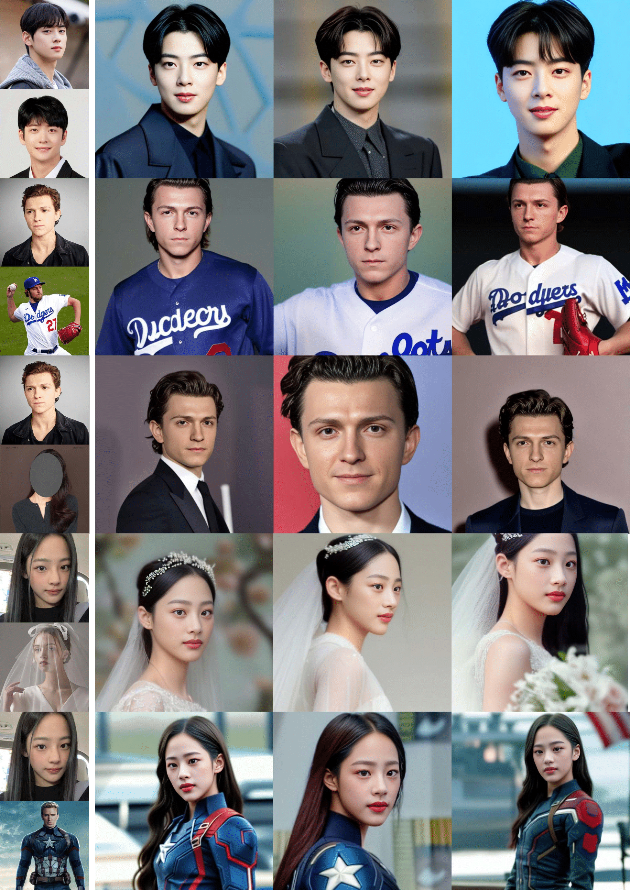
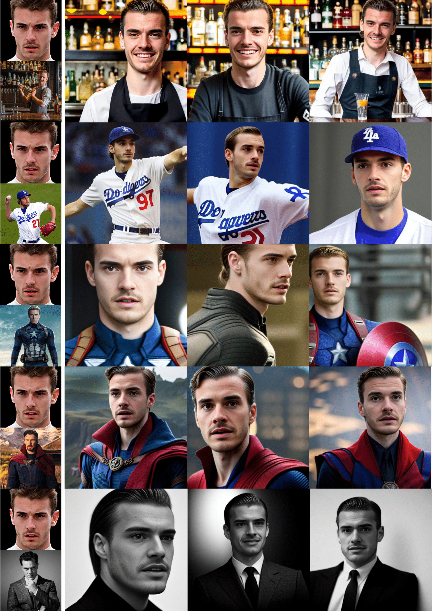
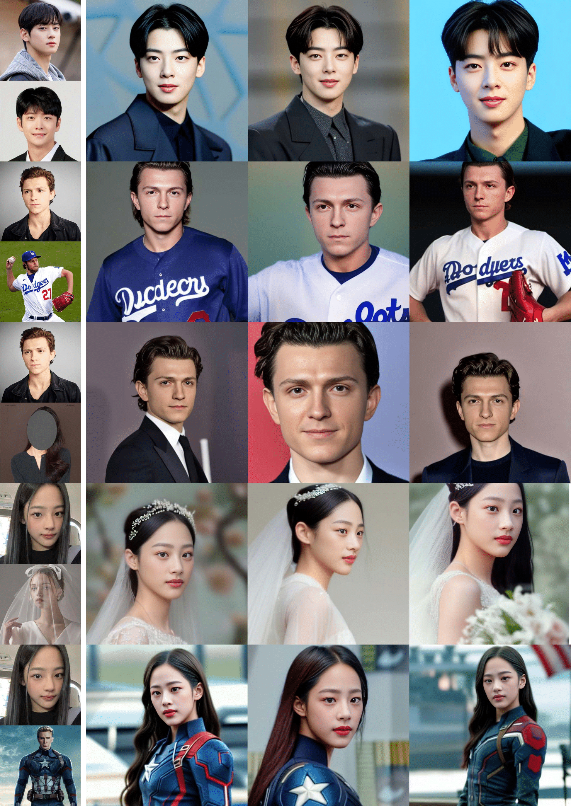
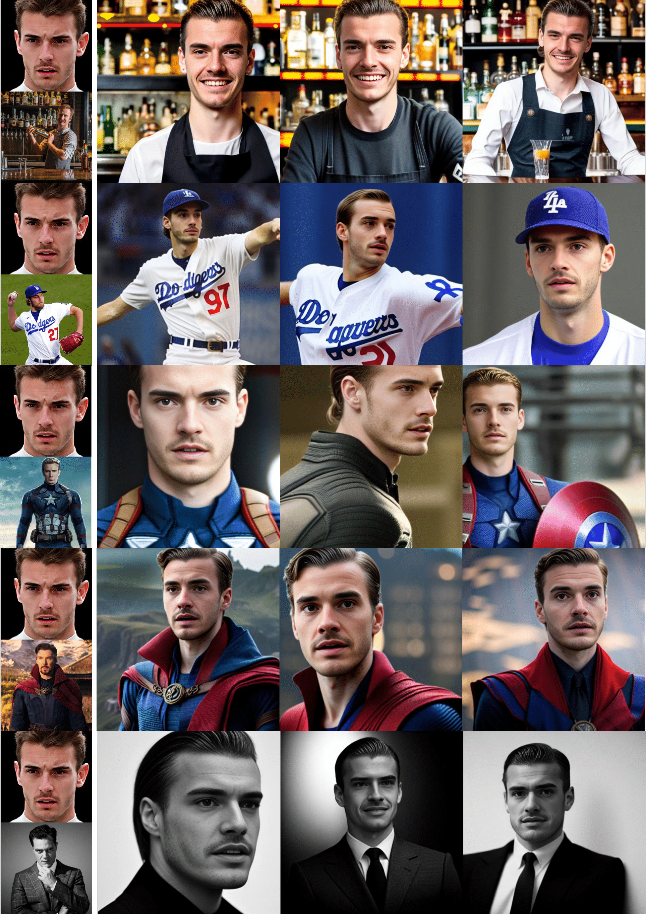

MagiCapture
Abstract
Large-scale text-to-image models including Stable Diffusion are capable of generating high-fidelity photorealistic portrait images. There is an active research area dedicated to personalizing these models, aiming to synthesize specific subjects or styles using provided sets of reference images. However, despite the plausible results from these personalization methods, they tend to produce images that often fall short of realism and are not yet on a commercially viable level. This is particularly noticeable in portrait image generation, where any unnatural artifact in human faces is easily discernible due to our inherent human bias. To address this, we introduce MagiCapture, a personalization method for integrating subject and style concepts to generate high-resolution portrait images using just a few subject and style references. For instance, given a handful of random selfies, our fine-tuned model can generate high-quality portrait images in specific styles, such as passport or profile photos. The main challenge with this task is the absence of ground truth for the composed concepts, leading to a reduction in the quality of the final output and an identity shift of the source subject. To address these issues, we present a novel Attention Refocusing loss coupled with auxiliary priors, both of which facilitate robust learning within this weakly supervised learning setting. Our pipeline also includes additional post-processing steps to ensure the creation of highly realistic outputs. MagiCapture outperforms other baselines in both quantitative and qualitative evaluations and can also be generalized to other non-human objects.
Method
Our method takes as input a few images (about 5 images suffice) of a source person image and reference style (or person) image. Then returns a LoRA, fine-tuned for each source and reference. At the inference, we can generate an image so tht source has the style of reference. We've introduced two main methods below.
Composed Prompt Learning - In the existing method of finetuning the diffusion model, generating image with a composed prompt such as "A photo of a [V1] person in the [V2] style" leads to undefined behavior, because the model had not been customized on such prompts. The resulting image may suffer from a shift in the identity of the source subject, and a decline in output quality. To address this, we include training on the composed prompt. We approach this challenge as a wealky-supervised learning problem, use auxiliary objective function to suit our needs. Please refer to the paper for more details.
Attention Refocusing - When optimizing with training images, it is vital to achieve information disentanglement : ensuring that special tokens exclusively embed the information of the region of interest. However, the masked reconstruction objective falls short of this goal because the presence of transformer layers in the UNet backbone gives the model a global receptive field. To solve this issue, we propose a novel Attention Refocusing loss, which steers the cross attention maps of each special token, using a binary target mask. Please refer to the paper for more details.
Results


 


